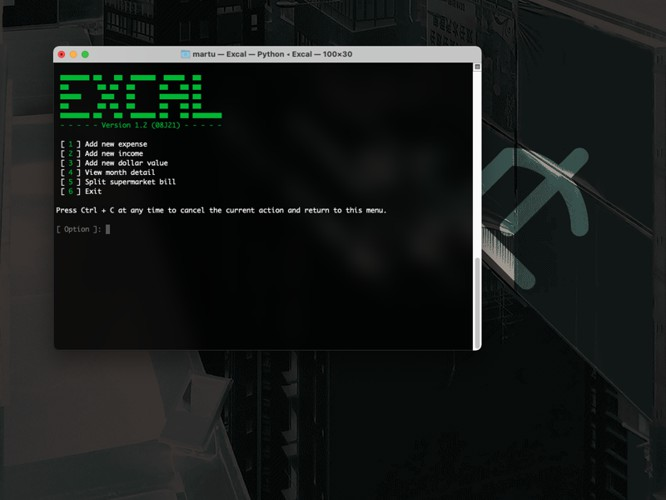

computing : games & art : research
sitemap
|
|
home
computing : games & art : research sitemap |
— D45M02 (JPEG) - view original (419 KiB, PNG)
Excal, the expense calculator, is a tool I developed to keep track of my expenses.
By analyzing what I spend my money on, I came up with 25 categories all my expenses fall under. Using these, I can calculate what I'm overspending on, know how much money I have left, know if I have gone overboard in some particular area, etc. It has helped me gain some insight on where my money is going.
Since Excal is fine-tuned for my own needs, it's not available for download; I may open-source it in the future, but it's not a priority.